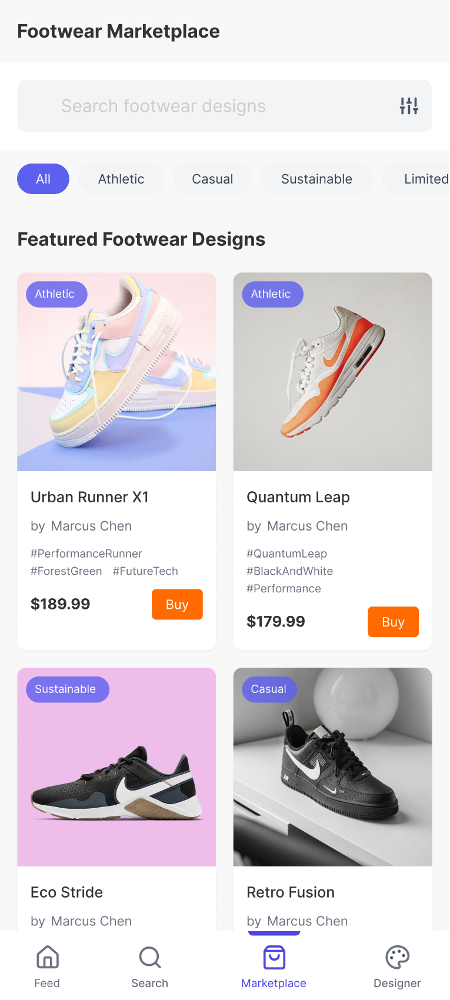
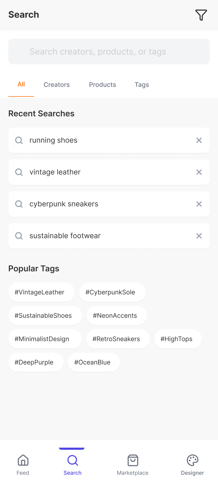
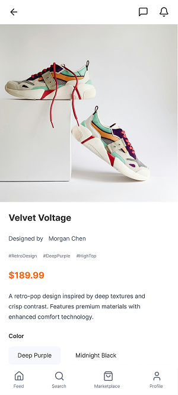
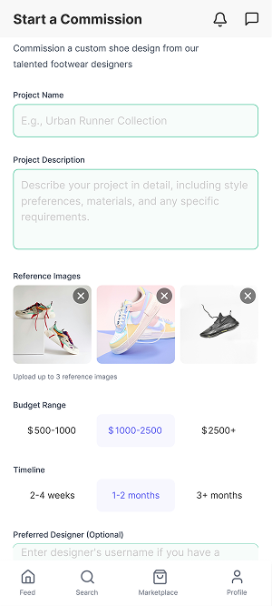
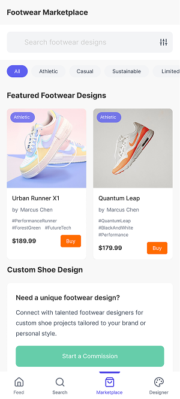

For Designers
Share Work, Build Presence
Document process, receive feedback, and build an audience without being pushed to optimise for engagement over quality.
A platform built for footwear designers. Community and commerce in one place, without one swallowing the other.
Footwear designers don't have a platform built for them. They use generic social apps that prioritize finished products over process, or marketplaces that reduce design to a listing. Neither one is actually about the work.
Forge is a concept for what that platform could look like. The goal was to build a system that treats craft, community, and commerce as equal parts of the same experience rather than forcing designers to choose between visibility and income.
I didn't want it to feel like an e-commerce app pretending to be social, or a social app pretending to sell. That balance mattered more than either extreme.
Document process, receive feedback, and build an audience without being pushed to optimise for engagement over quality.
Find designers by craft and aesthetic rather than follower count. Commission work directly through the platform without external back-and-forth.

Before touching visual design, I mapped the key structural decisions through low-fidelity wireframes. The goal was to validate role logic, discovery separation, and transaction flow before committing to anything aesthetic.
These three flows cover the core of how the platform works: how users onboard by role, how a purchase moves from feed to checkout, and how a designer posts and returns to their feed. Getting these right structurally made everything that came after much more straightforward.


The platform runs on a clear structure. Designers share and document work. Makers and brands discover or commission. Social features support visibility. Commerce integrates without dominating.
These three screens show the core views a user moves between daily: the home feed for casual discovery, the marketplace for structured browsing, and the notifications layer for community activity.


The logo was designed to feel modular and structured, similar to how footwear is built from parts. Each element has a reason to be where it is. I built it in Illustrator from scratch rather than adapting an existing typeface.
The opening animation is intentionally minimal, almost quiet. It sets the tone before anything else loads. The first signal to a user is that Forge is about craft, not noise. That first moment matters more than it might seem.
The first thing a new user does is pick a role: Footwear Designer or Shoe Maker. That single choice changes everything downstream. Content, recommendations, profile layout, and available actions all adapt based on that intent rather than defaulting to the same generic experience for everyone.
After role selection the account setup stays minimal. Only what's essential is collected so users can reach the core experience quickly. The goal was to communicate who the platform is for before asking anything back.


Forge pushed me to think beyond screens and into systems. Starting from user motivation and designing flows that feel usable and human.
Reflection on the project
One of the core structural decisions was separating casual exploration from intentional searching. These are different mindsets and they shouldn't compete in the same space.
Casual browsing, inspiration, unexpected discovery. No pressure to decide. Just work surfacing naturally through the feed.
Structured browsing with filters, categories, and clear purchase paths for users who know what they're looking for.



Product pages lead with the design story before the price. The intent was to make buying feel like supporting a designer rather than completing a transaction. That distinction is subtle but it changes how the whole page feels.
For brands or advanced needs, a commission flow allows direct collaboration without leaving the platform. The purchase path stays simple: Feed to Marketplace to Product to Purchase to Home. No detours, no friction.



Communication is part of the core experience, not something tacked on. Role-based profiles, built-in messaging, and a posting flow that adapts to user intent rather than forcing everyone into the same content structure.
Designers post with minimal friction: Profile to Post to Publish to Feed. The goal was speed and simplicity so sharing work feels like a natural habit rather than a production task.


Interactions were kept subtle throughout. Button states, transitions, and feedback animations were designed to feel responsive without distracting from the content itself.
The focus was on moments that matter most: following a designer, completing a purchase, navigating between sections. Small signals that tell the user the system is alive and responding to them.
This project pushed me to think beyond individual screens and into how a system behaves. Every design decision had to serve a user's motivation rather than just filling a screen with components.
I intentionally left out deep settings, payment configurations, and system-level screens. This wasn't about building a finished app. It was about communicating how the product works and whether the structure makes sense before visual polish enters the picture.
What I'd push further: the commission flow. The concept of direct designer-to-brand collaboration is the most interesting part of the platform and deserves its own distinct experience rather than being a branch of the marketplace.
Next Project